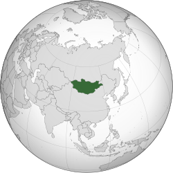
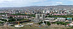
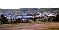

Mongolia
Mongolia | |
|---|---|
Anthem: Монгол улсын төрийн дуулал Monğol ulsyŋ töriyŋ duulal (English: "National anthem of Mongolia")  | |
|  Location of Mongolia (green) | |
| Capital and largest city | Ulaanbaatar[a] Coordinates: 48°N 106°E / 48°N 106°E |
| Official languages | Mongolian |
| Official scripts | |
| Ethnic groups (2020) | |
| Religion (2020) |
|
| Demonym(s) | |
| Government | Unitary semi-presidential republic[3][4][5] |
| Ukhnaagiin Khürelsükh | |
| Luvsannamsrain Oyun-Erdene | |
| Gombojavyn Zandanshatar | |
| Legislature | State Great Khural |
| Formation | |
| 1206 | |
• Independence declared from the Qing dynasty | December 29, 1911 |
| November 26, 1924 | |
• Independence recognized by the Republic of China | January 5, 1946 |
| February 12, 1992 | |
| Area | |
• Total | 1,564,116 km2 (603,909 sq mi) (18th) |
• Water (%) | 0.67[6] |
| Population | |
• 2020 estimate | 3,353,470[7] (134th) |
• 2015 census | 3,057,778[8] |
• Density | 2.07/km2 (5.4/sq mi) (194th) |
| GDP (PPP) | 2019 estimate |
• Total | $47 billion[9] (115th) |
• Per capita | $14,270[9] (93rd) |
| GDP (nominal) | 2019 estimate |
• Total | $13.7 billion[9] (133rd) |
• Per capita | $4,151[9] (116th) |
| Gini (2018) | 32.7[10] medium |
| HDI (2019) | high · 99th |
| Currency | Tögrög (MNT) |
| Time zone | UTC+7/+8[12] |
• Summer (DST) | UTC+8/+9[13] |
| Date format | yyyy.mm.dd (CE) |
| Driving side | right |
| Calling code | +976 |
| ISO 3166 code | MN |
| Internet TLD | .mn, .мон |
| |

{kind=link}
{kind=link}
{kind=link}
.svg){kind=link}
Mongolia (/mɒnˈɡoʊliə/ (listen), Mongolian: Монгол Улс Mongol Uls, Traditional Mongolian: [a] Moŋğol ulus; literally "Mongol Nation" or "State of Mongolia"), is a landlocked country in East Asia. It is located between Russia to the north and China to the south, where it neighbours the Inner Mongolia Autonomous Region. It covers an area of 1,564,116 square kilometres (603,909 square miles), with a population of just 3.3 million, making it the world's most sparsely populated sovereign nation. Mongolia is the world's largest landlocked country that does not border a closed sea, and much of its area is covered by grassy steppe, with mountains to the north and west and the Gobi Desert to the south. Ulaanbaatar, the capital and largest city, is home to roughly half of the country's population.
The territory of modern-day Mongolia has been ruled by various nomadic empires, including the Xiongnu, the Xianbei, the Rouran, the First Turkic Khaganate, and others. In 1206, Genghis Khan founded the Mongol Empire, which became the largest contiguous land empire in history. His grandson Kublai Khan conquered China to establish the Yuan dynasty. After the collapse of the Yuan, the Mongols retreated to Mongolia and resumed their earlier pattern of factional conflict, except during the era of Dayan Khan and Tumen Zasagt Khan. In the 16th century, Tibetan Buddhism spread to Mongolia, being further led by the Manchu-founded Qing dynasty, which absorbed the country in the 17th century. By the early 20th century, almost one-third of the adult male population were Buddhist monks.[14][15] After the collapse of the Qing dynasty in 1911, Mongolia declared independence, and achieved actual independence from the Republic of China in 1921. Shortly thereafter, the country became a satellite state of the Soviet Union, which had aided its independence from China. In 1924, the Mongolian People's Republic was founded as a socialist state.[16] After the anti-Communist revolutions of 1989, Mongolia conducted its own peaceful democratic revolution in early 1990. This led to a multi-party system, a new constitution of 1992, and transition to a market economy.
Approximately 30% of the population is nomadic or semi-nomadic; horse culture remains integral. Buddhism is the majority religion, with the nonreligious being the second-largest group. Islam is the second-largest religion, concentrated among ethnic Kazakhs. Most citizens are ethnic Mongols, with roughly 5% of the population being Kazakhs, Tuvans, and other minorities, who are especially concentrated in the west. Mongolia is a member of the United Nations, Asia Cooperation Dialogue, G77, Asian Infrastructure Investment Bank, Non-Aligned Movement and a NATO global partner. It joined the World Trade Organization in 1997 and seeks to expand its participation in regional economic and trade groups.[6]
Etymology
| Mongolia | |||
|---|---|---|---|
| Mongolian name | |||
| Mongolian Cyrillic | Монгол Улс (Mongol Uls) | ||
| Mongolian script | ᠮᠣᠩᠭᠣᠯ ᠤᠯᠤᠰ | ||
| |||
The name Mongolia means the "Land of the Mongols" in Latin. The origin of the Mongolian word "Mongol" (монгол) is of uncertain etymology, given variously such as the name of a mountain or river; a corruption of the Mongolian Mongkhe-tengri-gal ("Eternal Sky Fire");[17] or a derivation from Mugulü, the 4th-century founder of the Rouran Khaganate.[18] First attested as the Mungu[19] (Chinese: 蒙兀, Modern Chinese Měngwù, Middle Chinese Muwngu[20]) branch of the Shiwei in an 8th-century Tang dynasty list of northern tribes, presumably related to the Liao-era Mungku[19] (Chinese: 蒙古, Modern Chinese Měnggǔ, Middle Chinese MuwngkuX[21]) tribe now known as the Khamag Mongol.
After the fall of the Liao in 1125, the Khamag Mongols became a leading tribe on the Mongolian Plateau. However, their wars with the Jurchen-ruled Jin dynasty and the Tatar confederation had weakened them. The last head of the tribe was Yesügei, whose son Temüjin eventually united all the Shiwei tribes as the Mongol Empire (Yekhe Monggol Ulus). In the thirteenth century, the word Mongol grew into an umbrella term for a large group of Mongolic-speaking tribes united under the rule of Genghis Khan.[22]
Since the adoption of the new Constitution of Mongolia on February 13, 1992, the official name of the state is "Mongolia" (Mongol Uls).
History
Prehistory and antiquity
The Khoit Tsenkher Cave[23] in Khovd Province shows lively pink, brown, and red ochre paintings (dated to 20,000 years ago) of mammoths, lynx, bactrian camels, and ostriches, earning it the nickname "the Lascaux of Mongolia". The venus figurines of Mal'ta (21,000 years ago) testify to the level of Upper Paleolithic art in northern Mongolia; Mal'ta is now part of Russia.
{kind=link}
Neolithic agricultural settlements (c. 5500–3500 BC), such as those at Norovlin, Tamsagbulag, Bayanzag, and Rashaan Khad, predated the introduction of horse-riding nomadism, a pivotal event in the history of Mongolia which became the dominant culture. Horse-riding nomadism has been documented by archeological evidence in Mongolia during the Copper and Bronze Age Afanasevo culture (3500–2500 BC); this culture was active to the Khangai Mountains in Central Mongolia. The wheeled vehicles found in the burials of the Afanasevans have been dated to before 2200 BC.[24] Pastoral nomadism and metalworking became more developed with the later Okunev culture (2nd millennium BC), Andronovo culture (2300–1000 BC) and Karasuk culture (1500–300 BC), culminating with the Iron Age Xiongnu Empire in 209 BC. Monuments of the pre-Xiongnu Bronze Age include deer stones, keregsur kurgans, square slab tombs, and rock paintings.
Although cultivation of crops has continued since the Neolithic, agriculture has always remained small in scale compared to pastoral nomadism. Agriculture may have first been introduced from the west or arose independently in the region. The population during the Copper Age has been described as mongoloid in the east of what is now Mongolia, and as europoid in the west.[23] Tocharians (Yuezhi) and Scythians inhabited western Mongolia during the Bronze Age. The mummy of a Scythian warrior, which is believed to be about 2,500 years old, was a 30- to 40-year-old man with blond hair; it was found in the Altai, Mongolia.[25] As equine nomadism was introduced into Mongolia, the political center of the Eurasian Steppe also shifted to Mongolia, where it remained until the 18th century CE. The intrusions of northern pastoralists (e.g. the Guifang, Shanrong, and Donghu) into China during the Shang dynasty (1600–1046 BC) and Zhou dynasty (1046–256 BC) presaged the age of nomadic empires.
The concept of Mongolia as an independent power north of China is expressed in a letter sent by Emperor Wen of Han to Laoshang Chanyu in 162 BC (recorded in the Hanshu):
The Emperor of China respectfully salutes the great Shan Yu (Chanyu) of the Hsiung-nu (Xiongnu)...When my imperial predecessor erected the Great Wall, all the bowmen nations on the north were subject to the Shan Yu; while the residents inside the wall, who wore the cap and sash, were all under our government: and the myriads of the people, by following their occupations, ploughing and weaving, shooting and hunting, were able to provide themselves with food and clothing...Your letter says:--"The two nations being now at peace, and the two princes living in harmony, military operations may cease, the troops may send their horses to graze, and prosperity and happiness prevail from age to age, commencing, a new era of contentment and peace." That is extremely gratifying to me...Should I, in concert with the Shan Yu, follow this course, complying with the will of heaven, then compassion for the people will be transmitted from age to age, and extended to unending generations, while the universe will be moved with admiration, and the influence will be felt by neighbouring kingdoms inimical to the Chinese or the Hsiung-nu...As the Hsiung-nu live in the northern regions, where the cold piercing atmosphere comes at an early period, I have ordered the proper authorities to transmit yearly to the Shan Yu, a certain amount of grain, gold, silks of the finer and coarser kinds, and other objects. Now peace prevails all over the world; the myriads of the population are living in harmony, and I and the Shan Yu alone are the parents of the people...After the conclusion of the treaty of peace throughout the world, take notice, the Han will not be the first to transgress.[26]
{kind=link}
Since prehistoric times, Mongolia has been inhabited by nomads who, from time to time, formed great confederations that rose to power and prominence. Common institutions were the office of the Khan, the Kurultai (Supreme Council), left and right wings, imperial army (Keshig) and the decimal military system. The first of these empires, the Xiongnu of undetermined ethnicity, were brought together by Modu Shanyu to form a confederation in 209 BC. Soon they emerged as the greatest threat to the Qin Dynasty, forcing the latter to construct the Great Wall of China. It was guarded by up to almost 300,000 soldiers during Marshal Meng Tian's tenure, as a means of defense against the destructive Xiongnu raids. The vast Xiongnu empire (209 BC–93 AD) was followed by the Mongolic Xianbei empire (93–234 AD), which also ruled more than the entirety of present-day Mongolia. The Mongolic Rouran Khaganate (330–555), of Xianbei provenance was the first to use "Khagan" as an imperial title. It ruled a massive empire before being defeated by the Göktürks (555–745) whose empire was even bigger.
The Göktürks laid siege to Panticapaeum, present-day Kerch, in 576. They were succeeded by the Uyghur Khaganate (745–840) who were defeated by the Kyrgyz. The Mongolic Khitans, descendants of the Xianbei, ruled Mongolia during the Liao Dynasty (907–1125), after which the Khamag Mongol (1125–1206) rose to prominence.
Lines 3–5 of the memorial inscription of Bilge Khagan (684–737) in central Mongolia summarizes the time of the Khagans:
In battles they subdued the nations of all four sides of the world and suppressed them. They made those who had heads bow their heads, and who had knees genuflect them. In the east up to the Kadyrkhan common people, in the west up to the Iron Gate they conquered... These Khagans were wise. These Khagans were great. Their servants were wise and great too. Officials were honest and direct with people. They ruled the nation this way. This way they held sway over them. When they died ambassadors from Bokuli Cholug (Baekje Korea), Tabgach (Tang China), Tibet (Tibetan Empire), Avar (Avar Khaganate), Rome (Byzantine Empire), Kirgiz, Uch-Kurykan, Otuz-Tatars, Khitans, Tatabis came to the funerals. So many people came to mourn over the great Khagans. They were famous Khagans.[27]
Middle Ages to early 20th century
{kind=link}
{kind=link}
{kind=link}
{kind=link}
In the chaos of the late 12th century, a chieftain named Temüjin finally succeeded in uniting the Mongol tribes between Manchuria and the Altai Mountains. In 1206, he took the title Genghis Khan, and waged a series of military campaigns – renowned for their brutality and ferocity – sweeping through much of Asia, and forming the Mongol Empire, the largest contiguous land empire in world history. Under his successors it stretched from present-day Poland in the west to Korea in the east, and from parts of Siberia in the north to the Gulf of Oman and Vietnam in the south, covering some 33,000,000 square kilometres (13,000,000 sq mi),[28] (22% of Earth's total land area) and had a population of over 100 million people (about a quarter of Earth's total population at the time). The emergence of Pax Mongolica also significantly eased trade and commerce across Asia during its height.[29][30]
After Genghis Khan's death, the empire was subdivided into four kingdoms or Khanates. These eventually became quasi-independent after the Toluid Civil War (1260–1264), which broke out in a battle for power following Möngke Khan's death in 1259. One of the khanates, the "Great Khaanate", consisting of the Mongol homeland and China, became known as the Yuan dynasty under Kublai Khan, the grandson of Genghis Khan. He set up his capital in present-day Beijing. After more than a century of power, the Yuan was replaced by the Ming dynasty in 1368, and the Mongol court fled to the north. As the Ming armies pursued the Mongols into their homeland, they successfully sacked and destroyed the Mongol capital Karakorum and other cities. Some of these attacks were repelled by the Mongols under Ayushridar and his general Köke Temür.[31]
After the expulsion of the Yuan dynasty rulers from China, the Mongols continued to rule their homeland, known as the Northern Yuan dynasty. The next centuries were marked by violent power struggles among various factions, notably the Genghisids and the non-Genghisid Oirats, as well as by several Chinese invasions (such as the five expeditions led by the Yongle Emperor).
In the early 16th century, Dayan Khan and his khatun Mandukhai reunited the entire Mongol nation under the Genghisids. In the mid-16th century, Altan Khan of the Tümed, a grandson of Dayan Khan – but not a hereditary or legitimate Khan – became powerful. He founded Hohhot in 1557. After he met with the Dalai Lama in 1578, he ordered the introduction of Tibetan Buddhism to Mongolia. (It was the second time this had occurred.) Abtai Khan of the Khalkha converted to Buddhism and founded the Erdene Zuu monastery in 1585. His grandson Zanabazar became the first Jebtsundamba Khutughtu in 1640. Following the leaders, the entire Mongolian population embraced Buddhism. Each family kept scriptures and Buddha statues on an altar at the north side of their ger (yurt). Mongolian nobles donated land, money and herders to the monasteries. As was typical in states with established religions, the top religious institutions, the monasteries, wielded significant temporal power in addition to spiritual power.[citation needed]
The last Mongol Khan was Ligden Khan in the early 17th century. He came into conflicts with the Manchus over the looting of Chinese cities, and also alienated most Mongol tribes. He died in 1634. By 1636 most Inner Mongolian tribes had submitted to the Manchus, who founded the Qing dynasty. The Khalkha eventually submitted to Qing rule in 1691, thus bringing all of today's Mongolia under Manchu rule. After several wars, the Dzungars (western Mongols or Oirats) were virtually annihilated during the Qing conquest of Dzungaria in 1757–1758.[32]
{kind=link}
Some scholars estimate that about 80% of the 600,000 or more Dzungar were destroyed by a combination of disease and warfare.[33] Outer Mongolia was given relative autonomy, being administered by the hereditary Genghisid khanates of Tusheet Khan, Setsen Khan, Zasagt Khan and Sain Noyon Khan. The Jebtsundamba Khutuktu of Mongolia had immense de facto authority. The Manchu forbade mass Chinese immigration into the area, which allowed the Mongols to keep their culture. The Oirats who migrated to the Volga steppes in Russia became known as Kalmyks.
The main trade route during this period was the Tea Road through Siberia; it had permanent stations located every 25 to 30 kilometres (16 to 19 mi), each of which was staffed by 5–30 chosen families.
Until 1911, the Qing dynasty maintained control of Mongolia with a series of alliances and intermarriages, as well as military and economic measures. Ambans, Manchu "high officials", were installed in Khüree, Uliastai, and Khovd, and the country was divided into numerous feudal and ecclesiastical fiefdoms (which also placed people in power with loyalty to the Qing). Over the course of the 19th century, the feudal lords attached more importance to representation and less importance to the responsibilities towards their subjects. The behaviour of Mongolia's nobility, together with usurious practices by Chinese traders and the collection of imperial taxes in silver instead of animals, resulted in widespread poverty among the nomads. By 1911 there were 700 large and small monasteries in Outer Mongolia; their 115,000 monks made up 21% of the population. Apart from the Jebtsundamba Khutuktu, there were 13 other reincarnating high lamas, called 'seal-holding saints' (tamgatai khutuktu), in Outer Mongolia.
Modern history
{kind=link}
With the fall of the Qing dynasty in 1911, Mongolia under the Bogd Khaan declared its independence. But the newly established Republic of China considered Mongolia to be part of its own territory. Yuan Shikai, the President of the Republic of China, considered the new republic to be the successor of the Qing. Bogd Khaan said that both Mongolia and China had been administered by the Manchu during the Qing, and after the fall of the Qing dynasty in 1911, the contract of Mongolian submission to the Manchu had become invalid.[34][b]
The area controlled by the Bogd Khaan was approximately that of the former Outer Mongolia during the Qing period. In 1919, after the October Revolution in Russia, Chinese troops led by warlord Xu Shuzheng occupied Mongolia. Warfare erupted on the northern border. As a result of the Russian Civil War, the White Russian Lieutenant General Baron Ungern led his troops into Mongolia in October 1920, defeating the Chinese forces in Niislel Khüree (now Ulaanbaatar) in early February 1921 with Mongol support.
To eliminate the threat posed by Ungern, Bolshevik Russia decided to support the establishment of a communist Mongolian government and army. This Mongolian army took the Mongolian part of Kyakhta from Chinese forces on March 18, 1921, and on July 6 Russian and Mongolian troops arrived in Khüree. Mongolia declared its independence again on July 11, 1921.[35] As a result, Mongolia was closely aligned with the Soviet Union over the next seven decades.
Mongolian People's Republic
In 1924, after the Bogd Khaan died of laryngeal cancer[36] or, as some sources claim, at the hands of Russian spies,[37] the country's political system was changed. The Mongolian People's Republic was established. In 1928, Khorloogiin Choibalsan rose to power. The early leaders of the Mongolian People's Republic (1921–1952) included many with Pan-Mongolist ideals. However, changing global politics and increased Soviet pressure led to the decline of Pan-Mongol aspirations in the following period.
{kind=link}
Khorloogiin Choibalsan instituted collectivization of livestock, began the destruction of the Buddhist monasteries, and carried out Stalinist purges, which resulted in the murders of numerous monks and other leaders. In Mongolia during the 1920s, approximately one-third of the male population were monks. By the beginning of the 20th century, about 750 monasteries were functioning in Mongolia.[38]
In 1930, the Soviet Union stopped Buryat migration to the Mongolian People's Republic to prevent Mongolian reunification. All leaders of Mongolia who did not fulfill Stalin's demands to perform Red Terror against Mongolians were executed, including Peljidiin Genden and Anandyn Amar. The Stalinist purges in Mongolia, which began in 1937, killed more than 30,000 people. Choibalsan died suspiciously in the Soviet Union in 1952. Comintern leader Bohumír Šmeral said, "People of Mongolia are not important, the land is important. Mongolian land is larger than England, France and Germany".[39]
{kind=link}
After the Japanese invasion of neighboring Manchuria in 1931, Mongolia was threatened on this front. During the Soviet-Japanese Border War of 1939, the Soviet Union successfully defended Mongolia against Japanese expansionism. Mongolia fought against Japan during the Battles of Khalkhin Gol in 1939 and during the Soviet–Japanese War in August 1945 to liberate Inner Mongolia from Japan and Mengjiang.[40]
Cold War
The February 1945 Yalta Conference provided for the Soviet Union's participation in the Pacific War. One of the Soviet conditions for its participation, put forward at Yalta, was that after the war Outer Mongolia would retain its independence. The referendum took place on October 20, 1945, with (according to official numbers) 100% of the electorate voting for independence.[41]
After the establishment of the People's Republic of China, both countries confirmed their mutual recognition on October 6, 1949. However, the Republic of China used its Security Council veto in 1955, to stop the admission of the Mongolian People's Republic to the United Nations on the grounds it recognized all of Mongolia —including Outer Mongolia— as part of China. This was the only time the Republic of China ever used its veto. Hence, and because of the repeated threats to veto by the ROC, Mongolia did not join the UN until 1961 when the Soviet Union agreed to lift its veto on the admission of Mauritania (and any other newly independent African state), in return for the admission of Mongolia. Faced with pressure from nearly all the other African countries, the ROC relented under protest. Mongolia and Mauritania were both admitted to the UN on 27 October 1961.[42][43][44] (see China and the United Nations)
{kind=link}
On January 26, 1952, Yumjaagiin Tsedenbal took power in Mongolia after the death of Choibalsan. Tsedenbal was the leading political figure in Mongolia for more than 30 years.[45] While Tsedenbal was visiting Moscow in August 1984, his severe illness prompted the parliament to announce his retirement and replace him with Jambyn Batmönkh.
Post-Cold War
The fall of the Soviet Union in 1991 strongly influenced Mongolian politics and youth. Its people undertook the peaceful Democratic Revolution in January 1990 and the introduction of a multi-party system and a market economy. At the same time, the transformation of the former Marxist-Leninist Mongolian People's Revolutionary Party to the current social democratic Mongolian People's Party reshaped the country's political landscape.
A new constitution was introduced in 1992, and the term "People's Republic" was dropped from the country's name. The transition to a market economy was often rocky; during the early 1990s the country had to deal with high inflation and food shortages.[46] The first election victories for non-communist parties came in 1993 (presidential elections) and 1996 (parliamentary elections). China has supported Mongolia's application for membership in to the Asia Cooperation Dialogue (ACD), Asia-Pacific Economic Cooperation (APEC) and granting it observer status in the Shanghai Cooperation Organization.[47]
Geography and climate
{kind=link}
At 1,564,116 km2 (603,909 sq mi), Mongolia is the world's 18th-largest country (after Iran).[48] It is significantly larger than the next-largest country, Peru. It mostly lies between latitudes 41° and 52°N (a small area is north of 52°), and longitudes 87° and 120°E. As a point of reference the northernmost part of Mongolia is on roughly the same latitude as Berlin (Germany) and Saskatoon (Canada), while the southernmost part is on roughly the same latitude as Rome (Italy) and Chicago (USA). The westernmost part of Mongolia is on roughly the same longitude as Kolkata in India, while the easternmost part is on the same longitude as Qinhuangdao and Hangzhou in China, as well as the western edge of Taiwan. Although Mongolia does not share a border with Kazakhstan, its westernmost point is only 36.76 kilometres (22.84 mi) from Kazakhstan.
The geography of Mongolia is varied, with the Gobi Desert to the south and cold, mountainous regions to the north and west. Much of Mongolia consists of the Mongolian-Manchurian grassland steppe, with forested areas accounting for 11.2% of the total land area,[49] a higher percentage than the Ireland (10%).[50] The whole of Mongolia is considered to be part of the Mongolian Plateau. The highest point in Mongolia is the Khüiten Peak in the Tavan bogd massif in the far west at 4,374 m (14,350 ft). The basin of the Uvs Lake, shared with Tuva Republic in Russia, is a natural World Heritage Site.
Climate
Mongolia is known as the "Land of the Eternal Blue Sky" or "Country of Blue Sky" (Mongolian: "Mönkh khökh tengeriin oron") because it has over 250 sunny days a year.[51][52][53][54]
{kind=link}
Most of the country is hot in the summer and extremely cold in the winter, with January averages dropping as low as −30 °C (−22 °F).[55] A vast front of cold, heavy, shallow air comes in from Siberia in winter and collects in river valleys and low basins causing very cold temperatures while slopes of mountains are much warmer due to the effects of temperature inversion (temperature increases with altitude).
{kind=link}
In winter the whole of Mongolia comes under the influence of the Siberian Anticyclone. The localities most severely affected by this cold weather are Uvs province (Ulaangom), western Khovsgol (Rinchinlhumbe), eastern Zavkhan (Tosontsengel), northern Bulgan (Hutag) and eastern Dornod province (Khalkhiin Gol). Ulaanbaatar is strongly, but less severely, affected. The cold gets less severe as one goes south, reaching the warmest January temperatures in Omnogovi Province (Dalanzadgad, Khanbogd) and the region of the Altai mountains bordering China. A unique microclimate is the fertile grassland-forest region of central and eastern Arkhangai Province (Tsetserleg) and northern Ovorkhangai Province (Arvaikheer) where January temperatures are on average the same and often higher than the warmest desert regions to the south in addition to being more stable. The Khangai Mountains play a certain role in forming this microclimate. In Tsetserleg, the warmest town in this microclimate, nighttime January temperatures rarely go under −30 °C (−22 °F) while daytime January temperatures often reach 0 °C (32 °F) to 5 °C (41 °F).[56][57]
The country is subject to occasional harsh climatic conditions known as zud. Zud, a natural disaster unique to Mongolia, results in large proportions of the country's livestock dying from starvation or freezing temperatures or both, resulting in economic upheaval for the largely pastoral population. The annual average temperature in Ulaanbaatar is −1.3 °C (29.7 °F), making it the world's coldest capital city.[55] Mongolia is high, cold and windy.[58] It has an extreme continental climate with long, cold winters and short summers, during which most of its annual precipitation falls.[58] The country averages 257 cloudless days a year, and it is usually at the center of a region of high atmospheric pressure.[58] Precipitation is highest in the north (average of 200 to 350 millimeters (8 to 14 in) per year) and lowest in the south, which receives 100 to 200 millimeters (4 to 8 in) annually.[58] The highest annual precipitation of 622.297 mm (24.500 in) occurred in the forests of Bulgan Province near the border with Russia and the lowest of 41.735 mm (1.643 in) occurred in the Gobi Desert (period 1961–1990).[59] The sparsely populated far north of Bulgan Province averages 600 mm (24 in) in annual precipitation which means it receives more precipitation than Beijing (571.8 mm or 22.51 in) or Berlin (571 mm or 22.5 in).
Wildlife
{kind=link}
{kind=link}
The name "Gobi" is a Mongol term for a desert steppe, which usually refers to a category of arid rangeland with insufficient vegetation to support marmots but with enough to support camels.[58] Mongols distinguish Gobi from desert proper, although the distinction is not always apparent to outsiders unfamiliar with the Mongolian landscape.[58]
Gobi rangelands are fragile and easily destroyed by overgrazing, which results in expansion of the true desert, a stony waste where not even Bactrian camels can survive.[58] The arid conditions in the Gobi are attributed to the rain shadow effect caused by the Himalayas. Before the Himalayas were formed by the collision of the Indo-Australian plate with the Eurasian plate 10 million years ago, Mongolia was a flourishing habitat for major fauna but still somewhat arid and cold due to distance from sources of evaporation. Sea turtle and mollusk fossils have been found in the Gobi, apart from well-known dinosaur fossils. Tadpole shrimps (Lepidurus mongolicus) are still found in the Gobi today. The eastern part of Mongolia including the Onon and Kherlen rivers and Lake Buir form part of the Amur river basin draining to the Pacific Ocean. It hosts some unique species like the Eastern brook lamprey, Daurian crayfish (cambaroides dauricus) and Daurian pearl oyster (dahurinaia dahurica) in the Onon/Kherlen rivers as well as Siberian prawn (exopalaemon modestus) in Lake Buir.
Mongolia had a 2019 Forest Landscape Integrity Index mean score of 9.36/10, ranking it sixth globally out of 172 countries.[60]
Demographics
{kind=link}
{kind=link}
Mongolia's total population as of January 2015 was estimated by the U.S. Census Bureau[61][failed verification] to be 3,000,251 people, ranking around 121st in the world. But the U.S. Department of State Bureau of East Asian and Pacific Affairs uses the United Nations (UN) estimations[62] instead of the U.S. Census Bureau estimations. United Nations Department of Economic and Social Affairs Population Division[63] estimates Mongolia's total population (mid-2007) as 2,629,000 (11% less than the U.S. Census Bureau figure). UN estimates resemble those made by the Mongolian National Statistical Office (2,612,900, end of June 2007). Mongolia's population growth rate is estimated at 1.2% (2007 est.).[63] About 59% of the total population is under age 30, 27% of whom are under 14. This relatively young and growing population has placed strains on Mongolia's economy.[citation needed]
The first census in the 20th century was carried out in 1918 and recorded a population of 647,500.[64] Since the end of socialism, Mongolia has experienced a decline of total fertility rate (children per woman) that is steeper than in any other country in the world, according to recent UN estimations:[63] in 1970–1975, fertility was estimated to be 7.33 children per woman, dropping to about 2.1 in 2000–2005.[65] The decline ended and in 2005–2010, the estimated fertility value increased to 2.5 and stabilised afterwards at the rate of about 2.2–2.3 children per woman.[citation needed]
Ethnic Mongols account for about 95% of the population and consist of Khalkha and other groups, all distinguished primarily by dialects of the Mongol language. The Khalkha make up 86% of the ethnic Mongol population. The remaining 14% include Oirats, Buryats and others. Turkic peoples (Kazakhs and Tuvans) constitute 4.5% of Mongolia's population, and the rest are Russian, Chinese, Korean and American nationalities.[66]
Languages
The official language of Mongolia is Mongolian, and is spoken by 95% of the population. A variety of dialects of Oirat and Buryat are spoken across the country, and there are also some speakers of Mongolic Khamnigan. In the west of the country, Kazakh and Tuvan, both Turkic languages, are also spoken. Mongolian Sign Language is the principal language of the deaf community.
Today, Mongolian is written using the Cyrillic alphabet in Mongolia, although in the past it was written using the Mongolian script. An official reintroduction of the old script was planned for 1994, but has not taken place as older generations encountered practical difficulties.[67] Schools are reintroducing the traditional alphabet.[68] In March 2020, the Mongolian government announced plans to use both Cyrillic and the traditional Mongolian script in official documents by 2025.[69][70][71]
Russian is the most frequently spoken foreign language in Mongolia, followed by English, although English has been gradually replacing Russian as the second language. Korean has gained popularity as tens of thousands of Mongolians work in South Korea.[72]
Religion
| Religion | Population | Share |
|---|---|---|
| Non-religious | 735,283 | 38.6% |
| Religious | 1,170,283 | 61.4% |
| Buddhism | 1,009,357 | 53.0% |
| Islam | 57,702 | 3.0% |
| Shamanism | 55,174 | 2.9% |
| Christianity | 41,117 | 2.2% |
| Other religions | 6,933 | 0.4% |
| Total | 1,905,566 | 100.0% |
According to the 2010 National Census, among Mongolians aged 15 and above, 53% were Buddhists, while 39% were non-religious.
Mongolian shamanism has been widely practised throughout the history of what is now Mongolia, with similar beliefs being common among the nomads of central Asia. They gradually gave way to Tibetan Buddhism, but shamanism has left a mark on Mongolian religious culture, and it continues to be practiced. The Kazakhs of western Mongolia, some Mongols, and other Turkic peoples in the country traditionally adhere to Islam.
Throughout much of the 20th century, the communist government repressed religious practices. It targeted the clergy of the Mongolian Buddhist Church, which had been tightly intertwined with the previous feudal government structures (e.g. from 1911 on, the head of the Church had also been the Khan of the country).[74] In the late 1930s, the regime, then led by Khorloogiin Choibalsan, closed almost all of Mongolia's over 700 Buddhist monasteries and killed at least 30,000 people, of whom 18,000 were lamas.[75] The number of Buddhist monks dropped from 100,000 in 1924 to 110 in 1990.[74]
{kind=link}
The fall of communism in 1991 restored public religious practice. Tibetan Buddhism, which had been the predominant religion prior to the rise of communism, again rose to become the most widely practised religion in Mongolia. The end of religious repression in the 1990s also allowed for other religions to spread in the country. According to the Christian missionary group Barnabas Fund, the number of Christians grew from just four in 1989 to around 40,000 as of 2008[update]. In May 2013, The Church of Jesus Christ of Latter-day Saints (LDS Church) held a cultural program to celebrate twenty years of LDS Church history in Mongolia, with 10,900 members, and 16 church buildings in the country.[76] There are some 1,000 Catholics in Mongolia and, in 2003, a missionary from the Philippines was named Mongolia's first Catholic bishop.[77] In 2017 Seventh-day Adventists reported 2,700 members in six churches up from zero members in 1991.[78]
Government and politics
{kind=link}
Mongolia is a semi-presidential representative democratic republic with a directly elected President.[3][4][5] The people also elect the deputies in the national assembly, the State Great Khural. The president appoints the prime minister, and nominates the cabinet on the proposal of the prime minister. The constitution of Mongolia guarantees a number of freedoms, including full freedom of expression and religion. Mongolia has a number of political parties; the largest are the Mongolian People's Party and the Democratic Party. The non-governmental organisation Freedom House considers Mongolia to be free.[79]
The People's Party – known as the People's Revolutionary Party between 1924 and 2010 – formed the government from 1921 to 1996 (in a one-party system until 1990) and from 2000 to 2004. From 2004 to 2006, it was part of a coalition with the Democrats and two other parties, and after 2006 it was the dominant party in two other coalitions. The party initiated two changes of government from 2004 prior to losing power in the 2012 election. The Democrats were the dominant force in a ruling coalition between 1996 and 2000, and an almost-equal partner with the People's Revolutionary Party in a coalition between 2004 and 2006. An election of deputies to the national assembly on 28 June 2012 resulted in no party having an overall majority;[80] however, as the Democratic Party won the largest number of seats,[81] its leader, Norovyn Altankhuyag, was appointed prime minister on August 10, 2012.[82] In 2014, he was replaced by Chimediin Saikhanbileg. The MPP won a landslide victory in the 2016 elections and the next Prime Minister was MPP's Ukhnaagiin Khürelsükh. In June 2020, MPP won a landslide victory in the election. It took 62 seats and the main opposition DP, 11 of the 76 seats. Before the elections the ruling party had redrawn the electrol map in a way that was beneficial for MPP.[83] In January 2021, Prime Minister Ukhnaagiin Khürelsükh resigned after protests over the treatment of a coronavirus patient.[84] On 27 January 2021, Luvsannamsrai Oyun-Erdene of MPP became new prime minister. He represents a younger generation of leaders that had studied abroad.[85]
.jpg){kind=link}
The President of Mongolia is able to veto the laws made by parliament, appoint judges and justice of courts and appoint ambassadors. The parliament can override that veto by a two-thirds majority vote. Mongolia's constitution provides three requirements for taking office as president; the candidate must be a native-born Mongolian, be at least 45 years old, and have resided in Mongolia for five years before taking office. The president must also suspend their party membership. After defeating incumbent Nambaryn Enkhbayar, Tsakhiagiin Elbegdorj, a two-time former prime minister and member of the Democratic Party, was elected as president on May 24, 2009 and inaugurated on June 18 that year.[86] The ruling Mongolian People's Revolutionary Party (MPRP) nominated Batbold Sukhbaatar as new Prime Minister in October 2009.[87] Elbegdorj was re-elected on June 26, 2013 and was inaugurated on July 10, 2013 for his second term as president.[88] In June 2017, opposition Democratic Party candidate Khaltmaagiin Battulga won the presidential election.[89] He was inaugurated on 10 July 2017.[90]
Mongolia uses a unicameral legislature, the State Great Khural, with 76 seats, which is chaired by the Speaker of the House. Its members are directly elected, every four years, by popular vote.[5]
Foreign relations
_01.jpg){kind=link}
Mongolia's foreign relations traditionally focus on its two large neighbors, Russia and the People's Republic of China.[91] Mongolia is economically dependent on these countries; China receives 90% of Mongolia's exports by value and accounts for 60% of its foreign trade, while Russia supplies 90% of Mongolia's energy requirements.[6] It has begun seeking positive relations with a wider range of other nations especially in cultural and economic matters, focusing on encouraging foreign investments and trade.[92]
Embassies
Mongolia maintains many diplomatic missions in other countries and has embassies in the following world capitals:[93]
Military
_51.jpg){kind=link}
Mongolia supported the 2003 invasion of Iraq, and has sent several successive contingents of 103 to 180 troops each to Iraq. About 130 troops are currently deployed in Afghanistan. 200 Mongolian troops are serving in Sierra Leone on a UN mandate to protect the UN's special court set up there, and in July 2009, Mongolia decided to send a battalion to Chad in support of MINURCAT.[94]
From 2005 to 2006, about 40 troops were deployed with the Belgian and Luxembourg contingents in Kosovo. On November 21, 2005, George W. Bush became the first-ever sitting U.S. president to visit Mongolia.[95] In 2004, under Bulgarian chairmanship, the Organization for Security and Co-operation in Europe (OSCE) invited Mongolia as its newest Asian partner.
Legal system
The judiciary of Mongolia is made of a three-tiered court system: first instance courts in each provincial district and each Ulaanbaatar district; appellate courts for each province and also the Capital Ulaanbaatar; and the court of last resort (for non-constitutional matters) at the Supreme Court of Mongolia.[96] For questions of constitutional law there is a separate constitutional court.
A Judicial General Council (JGC) nominates judges which must then be confirmed by the parliament and appointed by the President.
Arbitration centres provide alternative dispute resolution options for commercial and other disputes.[97]
Administrative divisions
{kind=link}
Mongolia is divided into 21 provinces (aimags) and subdivided into 331 districts (sums).[98] The capital Ulaanbaatar is administrated separately as a capital city (municipality) with provincial status. The aimags are:
Major cities
This section needs to be updated. (February 2019) |
About 40% of the population lives in Ulaanbaatar (Ulan Bator), and in 2002 a further 23% lived in Darkhan, Erdenet, the aimag centers and sum-level permanent settlements.[99] Another share of the population lives in the sum centers.
Largest cities or towns in Mongolia
2008 | |||||||||
|---|---|---|---|---|---|---|---|---|---|
| Rank | Name | Province | Pop. | Rank | Name | Province | Pop. | ||
|  Ulaanbaatar  Erdenet |
1 | Ulaanbaatar | Ulaanbaatar | 1,340,000 | 11 | Sükhbaatar | Selenge | 19,626 | |
| 2 | Erdenet | Orkhon | 86,866 | 12 | Sainshand | Dornogovi | 19,891 | ||
| 3 | Darkhan | Darkhan-Uul | 74,300 | 13 | Dalanzadgad | Ömnögovi | 16,856 | ||
| 4 | Choibalsan | Dornod | 38,150 | 14 | Tsetserleg | Arkhangai | 16,300 | ||
| 5 | Mörön | Khövsgöl | 36,082 | 15 | Uliastai | Zavkhan | 16,240 | ||
| 6 | Khovd | Khovd | 28,601 | 16 | Altai | Govi-Altai | 15,800 | ||
| 7 | Ölgii | Bayan-Ölgii | 27,855 | 17 | Züünkharaa | Selenge | 15,000 | ||
| 8 | Bayankhongor | Bayankhongor | 26,252 | 18 | Öndörkhaan | Khentii | 14,800 | ||
| 9 | Arvaikheer | Övörkhangai | 25,622 | 19 | Zuunmod | Töv | 14,568 | ||
| 10 | Ulaangom | Uvs | 21,406 | ||||||
{kind=link}
{kind=link}
Economy
This section needs to be updated. (August 2016) |
{kind=link}
.svg){kind=link}
{kind=link}
Economic activity in Mongolia has long been based on herding and agriculture, although development of extensive mineral deposits of copper, coal, molybdenum, tin, tungsten and gold have emerged as a driver of industrial production.[100] Besides mining (21.8% of GDP) and agriculture (16% of GDP), dominant industries in the composition of GDP are wholesale and retail trade and service, transportation and storage, and real estate activities.[100] The informal economy is estimated to be at least one-third the size of the official economy.[100] As of 2006[update], 68.4% of Mongolia's exports went to the PRC, and the PRC supplied 29.8% of Mongolia's imports.[101]
Mongolia is ranked as lower-middle-income economy by the World Bank.[102] Some 22.4% of the population lives on less than US$1.25 a day.[103] In 2011, GDP per capita was $3,100.[6] Despite growth, the proportion of the population below the poverty line was estimated to be 35.6% in 1998, 36.1% in 2002–2003, and 32.2% in 2006.[104]
Because of a boom in the mining sector, Mongolia had high growth rates in 2007 and 2008 (9.9% and 8.9%, respectively).[100] In 2009, sharp drops in commodity prices and the effects of the global financial crisis caused the local currency to drop 40% against the U.S. dollar. Two of the 16 commercial banks were taken into receivership.[100] In 2011, GDP growth was expected to reach 16.4%. However, inflation continued to erode GDP gains, with an average rate of 12.6% expected at the end of 2011.[100] Although GDP has risen steadily since 2002 at the rate of 7.5% in an official 2006 estimate, the state is still working to overcome a sizable trade deficit. The Economist predicted this trade deficit of 14% of Mongolia's GDP would transform into a surplus in 2013.[105]
Mongolia was never listed among the emerging market countries until February 2011 when Citigroup analysts determined Mongolia to be one of the "global growth generating" countries, which are countries with the most promising growth prospects for 2010–2050.[106] The Mongolian Stock Exchange, established in 1991 in Ulaanbaatar, is among the world's smallest stock exchanges by market capitalisation.[107][108] In 2011, it had 336 companies listed with a total market capitalization of US$2 billion after quadrupling from US$406 million in 2008.[109] Mongolia made a significant improvement in the ease of doing business in 2012, ranking 76th compared with 88th the previous year in the "Doing Business" report by the International Finance Corporation (IFC).[110]
Mineral industry
{kind=link}
Minerals represent more than 80% of Mongolia's exports, a proportion expected to eventually rise to 95%. Fiscal revenues from mining represented 21% of government income in 2010 and rose to 24% in 2018.[112][113] About 3,000 mining licences have been issued.[105] Mining continues to rise as a major industry of Mongolia as evidenced by the number of Chinese, Russian and Canadian firms starting mining businesses in Mongolia.[6]
In 2009, the government negotiated an "investment agreement" with Rio Tinto and Ivanhoe Mines to develop the Oyu Tolgoi copper and gold deposit,[100] the biggest foreign-investment project in Mongolia, expected to account for one-third of Mongolia's GDP by 2020.[105] In March 2011, six big mining companies prepared to bid for the Tavan Tolgoi area, the world's largest untapped coal deposit. According to Erdenes MGL, the government body in-charge of Tavan Tolgoi, ArcelorMittal, Vale, Xstrata, U.S. coal miner Peabody, a consortium of Chinese energy firm Shenhua and Japan's Mitsui & Co, and a separate consortium of Japanese, South Korean and Russian firms are the preferred bidders.[114]
Agriculture
In 2002, about 30% of all households in Mongolia lived from breeding livestock.[115] Most herders in Mongolia follow a pattern of nomadic or semi-nomadic pastoralism. Due to the severe 2009–2010 winter, Mongolia lost 9.7 million animals, or 22% of total livestock. This immediately affected meat prices, which increased twofold; the GDP dropped 1.6% in 2009.[100]
Infrastructure
Communications
Postal services are provided by state-owned Mongol Post and 54 other licensed operators.[116]
Energy
Mongolia's main source of energy is thermal power, which is converted to electricity at the seven power stations currently active in the country.
Transportation
{kind=link}
{kind=link}

The Trans-Mongolian Railway is the main rail link between Mongolia and its neighbors. It begins at the Trans-Siberian Railway in Russia at the town of Ulan-Ude, crosses into Mongolia, runs through Ulaanbaatar, then passes into China at Erenhot where it joins the Chinese railway system. A separate railroad link connects the eastern city of Choibalsan with the Trans-Siberian Railway. However, that link is closed to passengers after the Mongolian town of Chuluunkhoroot.[117]
Mongolia has a number of domestic airports, with some of them having international status. However, the main international airport is Buyant-Ukhaa International Airport, located approximately 20 km (12 mi) from downtown Ulaanbaatar. Direct flight connections exist between Mongolia and South Korea, China, Thailand, Hong Kong, Japan, Russia, Germany, and Turkey. MIAT Mongolian Airlines is Mongolia's national air carrier, operating international flights, while air carriers such as Aero Mongolia and Hunnu Airlines serve domestic and short international routes.
Many overland roads in Mongolia are only gravel roads or simple cross-country tracks. There are paved roads from Ulaanbaatar to the Russian and Chinese borders, from Ulaanbaatar east- and westward (the so-called Millennium Road), and from Darkhan to Bulgan. A number of road construction projects are currently underway. Mongolia has 4,800 km (3,000 mi) of paved roads, with 1,800 km (1,100 mi) of that total completed in 2013 alone.[118]
Education
During the state socialist period, education was one of the areas of significant achievement in Mongolia. Before the People's Republic, literacy rates were below one percent. By 1952, illiteracy was virtually eliminated,[119] in part through the use of seasonal boarding schools for children of nomadic families. Funding to these boarding schools was cut in the 1990s, contributing to slightly increased illiteracy.
Primary and secondary education formerly lasted ten years, but was expanded to eleven years. Since the 2008–2009 school year, new first-graders are using the 12-year system, with a full transition to the 12-year system in the 2019–2020 school year.[120]
As of 2006[update], English is taught in all secondary schools across Mongolia, beginning in fourth grade.
Mongolian national universities are all spin-offs from the National University of Mongolia and the Mongolian University of Science and Technology. Almost three in five Mongolian youths now enroll in university. There was a six-fold increase in students between 1993 and 2010.[121]
Health
Modern Mongolia inherited a relatively good healthcare system from its socialist period, a world bank report from 2007 notes "despite its low per capita income, Mongolia has relatively strong health indicators; a reflection of the important health gains achieved during the socialist period." On average Mongolia's infant mortality rate is less than half of that of similarly economically developed countries, its under-five mortality rate and life expectancy are all better on average than other nations with similar GDP per capita.
Since 1990, key health indicators in Mongolia like life expectancy and infant and child mortality have steadily improved, both due to social changes and to improvement in the health sector. Echinococcosis was one of the commonest surgical diagnoses in the 1960s, but now has been greatly reduced. Yet, adult health deteriorated during the 1990s and the first decade of the 21st century and mortality rates increased significantly. Smallpox, typhus, plague, poliomyelitis, and diphtheria were eradicated by 1981. The Mongolian Red Cross Society focusses on preventive work. The Confederation of Mongolian Trade Unions established a network of sanatoriums.
Serious problems remain, especially in the countryside. According to a 2011 study by the World Health Organization, Mongolia's capital city of Ulaanbaatar has the second-most fine particle pollution of any city in the world. Poor air quality is also the largest occupational hazard, as over two-thirds of occupational disease in Mongolia is dust induced chronic bronchitis or pneumoconiosis.
Average childbirth (fertility rate) is around 2.25–1.87 per woman (2007) and average life expectancy is 68.5 years (2011). Infant mortality is at 1.9% to 4% and child mortality is at 4.3%.
Culture
The symbol in the left bar of the national flag is a Buddhist icon called Soyombo. It represents the sun, moon, stars, and heavens per standard cosmological symbology abstracted from that seen in traditional thangka paintings.
Visual arts
Before the 20th century, most works of the fine arts in Mongolia had a religious function, and therefore Mongolian fine arts were heavily influenced by religious texts.[122] Thangkas were usually painted or made in appliqué technique. Bronze sculptures usually showed Buddhist deities. A number of great works are attributed to the first Jebtsundamba Khutuktu, Zanabazar.
In the late 19th century, painters like "Marzan" Sharav turned to more realistic painting styles. Under the Mongolian People's Republic, socialist realism was the dominant painting style,[123] however traditional thangka-like paintings dealing with secular, nationalist themes were also popular, a genre known as "Mongol zurag".
Among the first attempts to introduce modernism into the fine arts of Mongolia was the painting Ehiin setgel (Mother's love) created by Tsevegjav in the 1960s. The artist was purged as his work was censored.
All forms of fine arts flourished only after "Perestroika" in the late 1980s. Otgonbayar Ershuu is arguably one of the most well-known Mongolian modern artists in the Western world, he was portrayed in the film "ZURAG" by Tobias Wulff.[124]
Architecture
{kind=link}
The traditional Mongolian dwelling is known as a ger. In the past it was known by the Russian term yurt, but this has been changing as the Mongolian term becomes better known in English-speaking countries. According to Mongolian artist and art critic N. Chultem, the ger was the basis for development of traditional Mongolian architecture. In the 16th and 17th centuries, lamaseries were built throughout the country. Many of them started as ger-temples. When they needed to be enlarged to accommodate the growing number of worshippers, the Mongolian architects used structures with 6 and 12 angles[clarification needed] with pyramidal roofs to approximate to the round shape of a ger. Further enlargement led to a quadratic shape of the temples. The roofs were made in the shape of marquées.[125] The trellis walls, roof poles and layers of felt were replaced by stone, brick, beams and planks, and became permanent.[126]
Chultem distinguished three styles in traditional Mongolian architecture: Mongolian, Tibetan and Chinese as well as combinations of the three. Among the first quadratic temples was Batu-Tsagaan (1654) designed by Zanabazar. An example of the ger-style architecture is the lamasery Dashi-Choiling in Ulaanbaatar. The temple Lavrin (18th century) in the Erdene Zuu lamasery was built in the Tibetan tradition. An example of a temple built in the Chinese tradition is the lamasery Choijing Lamiin Sume (1904), which is a museum today. The quadratic temple Tsogchin in lamasery Gandan in Ulaanbaatar is a combination of the Mongolian and Chinese tradition. The temple of Maitreya (disassembled in 1938) is an example of the Tibeto-Mongolian architecture.[125] Dashi-Choiling monastery has commenced a project to restore the temple and the 25 metres (82 ft) sculpture of Maitreya.
Music
{kind=link}
The music of Mongolia is strongly influenced by nature, nomadism, shamanism, and also Tibetan Buddhism. The traditional music includes a variety of instruments, famously the morin khuur, and also the singing styles like the urtyn duu ("long song"), and throat-singing (khoomei). The "tsam" is danced to keep away evil spirits and it was seen as reminiscent of shamanism.
The first rock band of Mongolia was Soyol Erdene, founded in the 1960s. Their Beatles-like manner was severely criticized by the communist censorship. It was followed by Mungunhurhree, Ineemseglel, Urgoo, etc., carving out the path for the genre in the harsh environment of communist ideology. Mungunhurhree and Haranga were to become the pioneers in the Mongolia's heavy rock music. Haranga approached its zenith in the late 1980s and 1990s.
The leader of Haranga, famous guitarist Enh-Manlai, generously helped the growth of the following generations of rockers. Among the followers of Haranga was the band Hurd. In the early 1990s, group Har-Chono pioneered Mongolia's folk-rock, merging elements of the Mongolian traditional "long song" into the genre.
By that time, the environment for development of artistic thought had become largely liberal thanks to the new democratic society in the country. The 1990s saw the development of rap, techno, hip-hop and also boy bands and girl bands flourished at the turn of the millennium.
Media
{kind=link}
Mongolian press began in 1920 with close ties to the Soviet Union under the Mongolian Communist Party, with the establishment of the Unen ("Truth") newspaper similar to the Soviet Pravda.[127] Until reforms in the 1990s, the government had strict control of the media and oversaw all publishing, in which no independent media were allowed.[127] The dissolution of the Soviet Union had a significant impact on Mongolia, where the one-party state grew into a multi-party democracy, and with that, media freedoms came to the forefront.
A new law on press freedom, drafted with help from international NGOs on August 28, 1998 and enacted on January 1, 1999, paved the way for media reforms.[128] The Mongolian media currently consists of around 300 print and broadcasting outlets.[129]
Since 2006, the media environment has been improving with the government debating a new Freedom of Information Act, and the removal of any affiliation of media outlets with the government.[130][131] Market reforms have led to an annually increasing number of people working in the media, along with students at journalism schools.[130]
In its 2013 World Press Freedom Index report, Reporters Without Borders classified the media environment as 98th out of 179, with 1st being most free.[132] In 2016, Mongolia was ranked 60th out of 180.[133]
According to 2014 Asian Development Bank survey, 80% of Mongolians cited television as their main source of information.[134]
Mongolian cuisine
Mongolian cuisine is rooted in their nomadic history, and thus includes much dairy content and meat, but few vegetables. Two of the most popular dishes are Buuz (a meat-filled steamed dumpling) and Khuushuur (a sort of deep-fried meat pie.)
Sports and festivals
{kind=link}
The main national festival is Naadam, which has been organised for centuries and takes place over three days in the summer, consisting of three Mongolian traditional sports, archery, cross-country horse-racing, and wrestling, traditionally recognized as the Three Manly Games of Naadam. In modern-day Mongolia, Naadam is held from July 11 to 13 in the honour of the anniversaries of the National Democratic Revolution and foundation of the Great Mongol State.
Another very popular activity called Shagaa is the "flicking" of sheep ankle bones at a target several feet away, using a flicking motion of the finger to send the small bone flying at targets and trying to knock the target bones off the platform. At Naadam, this contest is popular among older Mongolians.
{kind=link}
Horse riding is especially central to Mongolian culture. The long-distance races that are showcased during Naadam festivals are one aspect of this, as is the popularity of trick riding. One example of trick riding is the legend that the Mongolian military hero Damdin Sükhbaatar scattered coins on the ground and then picked them up while riding a horse at full gallop.
Mongolian wrestling is the most popular of all Mongol sports. It is the highlight of the Three Manly Games of Naadam. Historians claim that Mongol-style wrestling originated some seven thousand years ago. Hundreds of wrestlers from different cities and aimags around the country take part in the national wrestling competition.
Other sports such as basketball, weightlifting, powerlifting, association football, athletics, gymnastics, table tennis, jujutsu, karate, aikido, kickboxing, and mixed martial arts have become popular in Mongolia. More Mongolian table tennis players are competing internationally.
Freestyle wrestling has been practised since 1958 in Mongolia.[135] Mongolian freestyle wrestlers have won the first and the most Olympic medals of Mongolia.
Naidangiin Tüvshinbayar won Mongolia's first ever Olympic gold medal in the men's 100-kilogram class of judo.[136]
Amateur boxing has been practised in Mongolia since 1948.[137] The Mongolian Olympic boxing national team was founded in 1960. The Communist government of Mongolia banned boxing from 1964 to 1967 but the government soon ended the ban. Professional boxing began in Mongolia in the 1990s.
Mongolia national basketball team enjoyed some success recently, especially at the East Asian Games.
Association football is also played in Mongolia. The Mongolia national football team began playing national games again during the 1990s; but has not yet qualified for a major international tournament. The Mongolia Premier League is the top domestic competition.
Several Mongolian women have excelled in pistol shooting: Otryadyn Gündegmaa is a silver medalist of the 2008 Olympic Games, Munkhbayar Dorjsuren is a double world champion and Olympic bronze medal winner (now representing Germany), while Tsogbadrakhyn Mönkhzul is, as of May 2007, ranked third in the world in the 25-metre pistol event.[138]
Mongolian sumo wrestler Dolgorsürengiin Dagvadorj won 25 top division tournament championships, placing him fourth on the all-time list. In January 2015, Mönkhbatyn Davaajargal took his 33rd top division championship, giving him the most in the history of sumo.
Bandy is the only sport in which Mongolia has finished higher than third place at the Asian Winter Games, which happened in 2011 when the national team captured the silver medal. It led to being chosen as the best Mongolian sports team of 2011.[139] Mongolia won the bronze medal of the B division at the 2017 Bandy World Championship after which the then President of Mongolia, Tsakhiagiin Elbegdorj, held a reception for the team.[140]
Ulaanbataar holds an annual marathon in June. 2015 will have the sixth marathon that has been organized by Ar Mongol. The race starts at Sukh Bataar Square and is always open to residents and runners who come especially for this event.[141]
{kind=link}
Mongolia holds other traditional festivals throughout the year. The Golden Eagle Festival draws about 400 eagle hunters on horseback, including the traveler Мөнхбаярт Батсайхан (Mönkhbayart Batsaikhan), to compete with their birds. The Ice Festival and the Thousand Camel Festival are amongst many other traditional Mongolian festivals.
See also
.svg){kind=link}
Notes
- ^ Unicode text: ᠮᠤᠩᠭᠤᠯ ᠤᠯᠤᠰ
- ^ This view is further explored in the school of thought of New Qing History.
References
- ^ "Official Documents to be in Mongolian Script". UB Post. June 21, 2011. Archived from the original on November 1, 2011. Retrieved July 11, 2010.
- ^ Jump up to: a b https://web.archive.org/web/20201107230731/https://tuv.nso.mn/uploads/users/87/files/Khun_am_toollogo.pdf
- ^ Jump up to: a b Shugart, Matthew Søberg (September 2005). "Semi-Presidential Systems: Dual Executive and Mixed Authority Patterns" (PDF). Graduate School of International Relations and Pacific Studies. Archived from the original (PDF) on August 19, 2008. Retrieved February 21, 2016.
- ^ Jump up to: a b Shugart, Matthew Søberg (December 2005). "Semi-Presidential Systems: Dual Executive And Mixed Authority Patterns" (PDF). French Politics. 3 (3): 323–351. doi:10.1057/palgrave.fp.8200087. S2CID 73642272. Archived (PDF) from the original on March 4, 2016. Retrieved February 21, 2016.
Even if the president has no discretion in the forming of cabinets or the right to dissolve parliament, his or her constitutional authority can be regarded as 'quite considerable' in Duverger's sense if cabinet legislation approved in parliament can be blocked by the people's elected agent. Such powers are especially relevant if an extraordinary majority is required to override a veto, as in Mongolia, Poland, and Senegal.
- ^ Jump up to: a b c Odonkhuu, Munkhsaikhan (February 12, 2016). "Mongolia: A Vain Constitutional Attempt to Consolidate Parliamentary Democracy". ConstitutionNet. International IDEA. Archived from the original on February 25, 2016. Retrieved February 21, 2016.
Mongolia is sometimes described as a semi-presidential system because, while the prime minister and cabinet are collectively responsible to the SGKh, the president is popularly elected, and his/her powers are much broader than the conventional powers of heads of state in parliamentary systems.
- ^ Jump up to: a b c d e "Mongolia". The World Factbook. CIA. Retrieved August 9, 2015.
- ^ "Renewed 2015–2045 population projection". www.1212.mn. Mongolian Statistical Information Service. January 1, 2017. Retrieved May 28, 2020.
- ^ "2015 population and housing by census of mongolia". www.1212.mn. Mongolian Statistical Information Service. January 1, 2016. Retrieved May 28, 2020.
- ^ Jump up to: a b c d "World Economic Outlook Database, January 2019". IMF.org. International Monetary Fund. Retrieved February 24, 2019.
- ^ "GINI index (World Bank estimate) – Mongolia". data.worldbank.org. World Bank. Retrieved March 22, 2020.
- ^ Human Development Report 2020 The Next Frontier: Human Development and the Anthropocene (PDF). United Nations Development Programme. December 15, 2020. pp. 343–346. ISBN 978-92-1-126442-5. Retrieved December 16, 2020.
- ^ "Mongolia Standard Time is GMT (UTC) +8, some areas of Mongolia use GMT (UTC) +7". Time Temperature.com. Archived from the original on October 13, 2007. Retrieved September 30, 2007.
- ^ "Clock changes in Ulaanbaatar, Mongolia". timeanddate.com. Archived from the original on March 25, 2015. Retrieved March 27, 2015.
- ^ Michael Jerryson, Mongolian Buddhism: The Rise and Fall of the Sangha, (Chiang Mai: Silkworm Books, 2007), 89.
- ^ "Mongolia – Religion". Michigan State University. Archived from the original on March 15, 2015. Retrieved January 24, 2015.
- ^ Sik, Ko Swan (1990). Nationality and International Law in Asian Perspective. p. 39. ISBN 9780792308768. Archived from the original on September 4, 2015. Retrieved June 28, 2013.
- ^ National University of Mongolia, School of Social Sciences, Department of History (1999). "2. Хүний үүсэл, Монголчуудын үүсэл гарвал" [2. Origins of Humanity; Origins of the Mongols]. Монгол улсын түүх [History of Mongolia] (in Mongolian). Admon. pp. 67–69.CS1 maint: multiple names: authors list (link)
- ^ Г. Сүхбаатар (1992). "Монгол Нирун улс" [Mongol Nirun (Rouran) state]. Монголын эртний түүх судлал, III боть [Historiography of Ancient Mongolia, Volume III] (in Mongolian). 3. pp. 330–550.
- ^ Jump up to: a b Svantesson, Jan-Olov & al. The Phonology of Mongolian, pp. 103–105. Oxford Univ. Press (Oxford), 2005.
- ^ Pulleyblank, Edwin George. Lexicon of Reconstructed Pronunciation in Early Middle Chinese, Late Middle Chinese, and Early Mandarin. UBC Press, 1991. ISBN 0-7748-0366-5.
- ^ Baxter, Wm. H. & Sagart, Laurent. "Baxter–Sagart Old Chinese Reconstruction". Archived from the original on April 25, 2012. (1.93 MB). 2011. Retrieved 11 October 2011.
- ^ "Mongolia: Ethnography of Mongolia". Encyclopædia Britannica. Retrieved July 22, 2007.
- ^ Jump up to: a b Eleanora Novgorodova, Archäologische Funde, Ausgrabungsstätten und Skulpturen, in Mongolen (catalogue), pp. 14–20
- ^ David Christian (December 16, 1998). A History of Russia, Central Asia and Mongolia. Wiley. p. 101. ISBN 978-0-631-20814-3.
- ^ "Archeological Sensation-Ancient Mummy Found in Mongolia". Spiegel Online. Spiegel.de. August 25, 2006. Archived from the original on May 22, 2010. Retrieved May 2, 2010.
- ^ "Selections from the Han Narrative Histories". Silk Road Texts, Washington University at Saint Louis. Archived from the original on October 11, 2014. Retrieved March 30, 2014.
- ^ "Memorial Complex of Bilge Khagan". bitig.org. Archived from the original on February 3, 2015. Retrieved January 1, 2015.
- ^ Bruce R. Gordon. "To Rule the Earth…". Archived from the original on July 1, 2007. Retrieved June 28, 2013.
- ^ Guzman, Gregory G. (1988). "Were the barbarians a negative or positive factor in ancient and medieval history?". The Historian (50): 568–570.
- ^ Thomas T. Allsen (March 25, 2004). Culture and Conquest in Mongol Eurasia. Cambridge University Press. p. 211. ISBN 978-0-521-60270-9. Retrieved June 28, 2013.
- ^ 《扩廓帖木儿传》[biography of Köke Temür] (卷一四一，列传第二八 ed.). History of Yuan.
- ^ Edward Allworth. "Kazakhstan to c. 1700 ce". Encyclopædia Britannica. Archived from the original on December 12, 2013. Retrieved June 28, 2013.
- ^ Michael Edmund Clarke (2004). In the Eye of Power: China and Xinjiang from the Qing Conquest to the "New Great Game" for Central Asia, 1759 – 2004 (PDF) (PhD). Brisbane: Griffith University. p. 37. Archived from the original (PDF) on April 10, 2008.
- ^ Bawden, Charles (1968): The Modern History of Mongolia. Weidenfeld & Nicolson: 194–195
- ^ Thomas E. Ewing, "Russia, China, and the Origins of the Mongolian People's Republic, 1911–1921: A Reappraisal", in: The Slavonic and East European Review, Vol. 58, No. 3 (Jul. 1980), pp. 399, 414, 415, 417, 421
- ^ Кузьмин, С.Л.; [Kuzmin, S.L.]; Оюунчимэг, Ж.; [Oyunchimeg, J.]. "Буддизм и революция в Монголии" [Buddhism and the revolution in Mongolia] (in Russian). Archived from the original on March 6, 2016.
- ^ Догсомын Бодоо 1/2 on YouTube (Mongolian)
- ^ "Mongolia: The Bhudda and the Khan". Orient Magazine. Archived from the original on August 18, 2010. Retrieved June 28, 2013.
- ^ History of Mongolia, 2003, Volume 5. Mongolian Institute of History
- ^ Боржигон Хүсэл (January 18, 2015). "1945 ОНД БНМАУ-ААС ХЯТАД УЛСАД ҮЗҮҮЛСЭН ТУСЛАМЖ" [Mongolian People's Republic supported the Chinese Anti-Japan War in 1945]. Mongolia Journals Online. Retrieved February 2, 2019.
- ^ Nohlen, D, Grotz, F & Hartmann, C (2001) Elections in Asia: A data handbook, Volume II, p491 ISBN 0-19-924959-8
- ^ 因常任理事国投反对票而未获通过的决议草案或修正案各段 (PDF) (in Chinese). 聯合國. Archived (PDF) from the original on March 23, 2014.
- ^ "The veto and how to use it". BBC News Online. Archived from the original on July 26, 2010.
- ^ "Changing Pattern in the Use of Veto in the Security Council". Global Policy Forum. Archived from the original on May 8, 2013.
- ^ "Tsedenbal's Mongolia and the Communist Aid Donors: A Reappraisal | Wilson Center".
- ^ Rossabi, Morris (2005). Modern Mongolia: From Khans to Commissars to Capitalists. Berkeley: University of California Press. pp. 57–58, 143–144. ISBN 978-0520244191.
- ^ ""Pan-Mongolism" and U.S.-China-Mongolia relations". Jamestown Foundation. June 29, 2005. Archived from the original on December 27, 2015. Retrieved April 7, 2013.
- ^ "Country Comparison :: Area". The World Factbook. CIA. Archived from the original on February 9, 2014. Retrieved June 28, 2013.
- ^ "Mongolian Forestry Sector". Food and Agriculture Organization of the United Nations. Archived from the original on November 1, 2012. Retrieved May 31, 2013.
- ^ "Ireland now has the 'second-smallest' forest area in Europe". thejournal.ie. August 30, 2012. Archived from the original on January 10, 2014. Retrieved May 31, 2013.
- ^ "Mongolia Climate – Retrieve the average temperatures and rains in Mongolia & in Ulaan baatar". Archived from the original on February 3, 2016.
- ^ "Country Nicknames: Top 40 best nation aliases". May 31, 2013. Archived from the original on January 1, 2016.
- ^ "Nomadic trails in the land of the blue sky". BBC. Archived from the original on October 22, 2014.
- ^ "Weeping Camel: A Real Mongolian Tear-Jerker". National Geographic. July 7, 2004. Archived from the original on March 4, 2016.
- ^ Jump up to: a b "Republic of Mongolia" (PDF). 2004. Archived from the original (PDF) on October 2, 2006. Retrieved February 10, 2008.
- ^ "Arkhangai Meteorological Department". Icc.mn. June 24, 2013. Archived from the original on January 10, 2014. Retrieved June 28, 2013.
- ^ "Climate History for Tsetserleg, Mongolia". Weather Underground. Archived from the original on June 16, 2013. Retrieved June 28, 2013.
- ^ Jump up to: a b c d e f g DeGlopper, Donald R. (1991). "The Society and Its Environment". In Worden, Robert L.; Savada, Andrea Matles (eds.). Mongolia: a country study. Washington, D.C.: Federal Research Division, Library of Congress. OCLC 622910663. This article incorporates text from this source, which is in the public domain.CS1 maint: postscript (link)
- ^ "Annual average temperature and precipitation of Mongolia". Gis.wwf.mn. Archived from the original on January 10, 2014. Retrieved June 28, 2013.
- ^ Grantham, H. S.; et al. (2020). "Anthropogenic modification of forests means only 40% of remaining forests have high ecosystem integrity – Supplementary Material". Nature Communications. 11 (1): 5978. doi:10.1038/s41467-020-19493-3. ISSN 2041-1723. PMC 7723057. PMID 33293507.
- ^ "U.S. Census Bureau International Data Base". Archived from the original on December 11, 2007. Retrieved June 28, 2013.
- ^ "U.S. Department of State. Bureau of East Asian and Pacific Affairs. Background Note:Mongolia". State.gov. February 28, 2010. Retrieved May 2, 2010.
- ^ Jump up to: a b c "WPP2006_Highlights_0823.doc" (PDF). Archived (PDF) from the original on July 21, 2013. Retrieved June 28, 2013.
- ^ "Mongolia" (PDF). United Nations Economic and Social Commission for Asia and the Pacific. Archived (PDF) from the original on May 11, 2013. Retrieved June 28, 2013.
- ^ Spoorenberg, Thomas (2009). "The impact of the political and economic transition on fertility and family formation in Mongolia. A synthetic parity progression ratio analysis". Asian Population Studies. 5 (2): 127–151. doi:10.1080/17441730902992067. S2CID 153650562.
- ^ "Second wave of Chinese invasion". Sydney Morning Herald. August 13, 2007. Archived from the original on October 21, 2013. Retrieved June 28, 2013.
- ^ Ulrich Ammon; Norbert Dittmar; Klaus J. Mattheier; Peter Trudgill (2006). Sociolinguistics/Soziolinguistik: An Internationdkznal Handbook of the Science of Language and Society. Berlin: Walter de Gruyter & Co. ISBN 978-3-11-018418-1.
- ^ "Mongolia: Essential information". guardian.co.uk. London. November 22, 2006. Archived from the original on December 20, 2013. Retrieved March 27, 2010.
- ^ "Mongolia to promote usage of traditional script". China.org.cn (March 19, 2020).
- ^ Official documents to be recorded in both scripts from 2025, Montsame, 18 March 2020.
- ^ Mongolian Language Law is effective from July 1st, Gogo, 1 July 2015. "Misinterpretation 1: Use of cyrillic is to be terminated and only Mongolian script to be used. There is no provision in the law that states the termination of use of cyrillic. It clearly states that Mongolian script is to be added to the current use of cyrillic. Mongolian script will be introduced in stages and state and local government is to conduct their correspondence in both cyrillic and Mongolian script. This provision is to be effective starting January 1st of 2025. ID, birth certificate, marriage certificate and education certificates are to be both in Mongolian cyrillic and Mongolian script and currently Mongolian script is being used in official letters of President, Prime Minister and Speaker of Parliament."
- ^ Han, Jae-hyuck (May 5, 2006). "Today in Mongolia: Everyone can speak a few words of Korean". Office of the President, Republic of Korea. Archived from the original on September 30, 2007. Retrieved August 17, 2007.
- ^ 2010 Population and Housing Census of Mongolia. Data recorded in Brian J. Grim et al. Yearbook of International Religious Demography 2014. BRILL, 2014. p. 152
- ^ Jump up to: a b "Mongolia". Encyclopædia Britannica Online. July 11, 1921. Archived from the original on May 14, 2013. Retrieved June 28, 2013.
- ^ "Historical Injustice and Democratic Transition in Eastern Asia and Northern Europe, London 2002, p. 156" (PDF). Archived (PDF) from the original on May 11, 2011. Retrieved December 23, 2010.
- ^ "Members Celebrate 20 Years of Church in Mongolia". churchofjesuschrist.org. Retrieved June 2, 2013.
- ^ "Religions in Mongolia". Mongolia-attractions.com. Archived from the original on May 13, 2011. Retrieved 2010-05-02.
- ^ "Mongolia Mission". Adventistyearbook.org. December 16, 2019. Retrieved May 29, 2020.
- ^ "Freedom in the World, 2016" (PDF). Freedom House. Archived (PDF) from the original on February 5, 2016. Retrieved January 30, 2016.
- ^ "Preliminary Results Issued by the General Election Commission of Mongolia..." Infomongolia.com. June 29, 2012. Archived from the original on May 22, 2013. Retrieved June 28, 2013.
- ^ Hook, Leslie (June 29, 2012). "Democratic party leads Mongolia poll". Financial Times. Archived from the original on July 5, 2012. Retrieved June 28, 2013.
- ^ "N. Altankhuyag Becomes 27th Prime Minister of Mongolia". UBPost. August 10, 2012. Archived from the original on February 8, 2013. Retrieved June 28, 2013.
- ^ https://www.washingtonpost.com/politics/2020/07/07/heres-how-an-unpopular-ruling-party-swept-mongolias-june-elections/
- ^ https://www.thedailystar.net/world/news/mongolian-pm-resigns-2032101
- ^ https://thediplomat.com/2021/01/with-new-pm-a-new-generation-taking-charge-in-mongolia/
- ^ https://www.upi.com/Top_News/2009/05/25/Opposition-leader-Mongolias-new-president/53731243264038/
- ^ http://news.bbc.co.uk/2/hi/asia-pacific/8331142.stm
- ^ "President to be sworn in on 10th in front of Genghis Khan monument". shuud.mn (in Mongolian). July 3, 2013. Archived from the original on July 5, 2013. Retrieved July 3, 2013.
- ^ https://thediplomat.com/2017/07/mongolia-just-chose-a-new-president-what-now/
- ^ "Archived copy". Archived from the original on July 10, 2017. Retrieved July 11, 2017.CS1 maint: archived copy as title (link)
- ^ Dierkes, Julian (February 16, 2018). "Can Mongolia's Brash New President Navigate Between China and Russia?". WPR – World Politics Review. Archived from the original on September 9, 2017. Retrieved February 18, 2018.
- ^ "Mongolia Country Brief". Department of Foreign Affairs and Trade. Government of Australia. Archived from the original on August 14, 2015. Retrieved February 18, 2018.
- ^ "Mongolia Embassies & Consulates". EmbassyPages.com. Retrieved February 18, 2018.
- ^ "Ban Ki-Moon on press conference in Ulaanbaatar, July 27th, 2009". Un.org. Archived from the original on May 3, 2011. Retrieved May 2, 2010.
- ^ "President George W. Bush Visits Mongolia". US embassy in Mongolia, 2005. Archived from the original on February 29, 2008. Retrieved June 30, 2013.
- ^ "Judicial System of Mongolia". Supreme Court of Mongolia. Archived from the original on December 20, 2016. Retrieved December 10, 2016.
- ^ "Эвлэрүүлэн зуучлалын тухай хууль" [Law on mediation and conciliation]. www.Legalinfo.mn. May 22, 2012. Archived from the original on May 9, 2016. Retrieved May 13, 2016.
- ^ Givaandondogiin Purevsambuu (2006). Mongolia. Montsame News Agency. p. 46. ISBN 978-99929-0-627-9.
- ^ "National Statistical Office: Statistical Yearbook 2002, p. 39. "Villages" in this case refers to settlements that are not part of a sum, see p. 37" (PDF). Archived from the original (PDF) on March 25, 2009. Retrieved June 28, 2013.
- ^ Jump up to: a b c d e f g h "Background Note: Mongolia". Bureau of East Asian and Pacific Affairs.
- ^ Morris Rossabi; Vladimir Socor (May 5, 2005). "Beijing's growing politico-economic leverage over Ulaanbaatar". Jamestown Foundation. Archived from the original on December 21, 2013. Retrieved June 28, 2013.
- ^ "Mongolia – World Bank". Data.worldbank.org. Archived from the original on October 29, 2011. Retrieved October 30, 2011.
- ^ "Human Development Report 2011" (PDF). United Nations. 2011. Archived (PDF) from the original on January 11, 2012. Retrieved January 27, 2012.
- ^ Statistical Yearbook of Mongolia 2006, National Statistical Office, Ulaanbaatar, 2007
- ^ Jump up to: a b c "Booming Mongolia: Mine, all mine". The Economist. January 21, 2012. Archived from the original on January 21, 2012.
- ^ "Forget The BRICs: Citi's Willem Buiter Presents The 11 "3G" Countries That Will Win The Future". Business Insider. February 22, 2011. Archived from the original on November 22, 2011. Retrieved June 28, 2013.
- ^ Jeffs, Luke (February 12, 2007). "Mongolia earns a sporting chance with fledgling operation". Dow Jones Financial News Online. Retrieved September 11, 2007.
- ^ Cheng, Patricia (September 19, 2006). "Mongolian bourse seeks foreign investment". International Herald-Tribune. Archived from the original on August 20, 2007. Retrieved September 11, 2007.
- ^ "Message From The Board of Chairman and the Acting Ceo" (PDF). Mongolian Stock Exchange. Archived from the original (PDF) on May 4, 2012. Retrieved June 28, 2013.
- ^ "Improved regulations push Mongolia up on "Doing Business" index". Mad-mongolia.com. October 25, 2012. Archived from the original on October 28, 2012. Retrieved June 28, 2013.
- ^ "Mongolian copper – Halfway to where? – A massive mining project hits a snag". The Economist. October 8, 2011. Archived from the original on January 26, 2012.
- ^ Lkhagva, Davaajargal; Wang, Zheng; Liu, Changxin (May 29, 2019). "Mining Booms and Sustainable Economic Growth in Mongolia—Empirical Result from Recursive Dynamic CGE Model". Economies. 7 (2): 51. doi:10.3390/economies7020051. ISSN 2227-7099.
- ^ Mongolian Statistical Yearbook 2018. Ulan Bator: National Statistics Office of Mongolia. 2018.
- ^ Jin, Hyunjoo & David Stanway (March 7, 2011). "ArcelorMittal, Vale vie for huge Mongolia coal mine". Reuters. Reuters.com. Archived from the original on May 5, 2013. Retrieved June 28, 2013.
- ^ "Statistical Yearbook 2002" (PDF). National Statistical Office. pp. 43, 151. Archived from the original (PDF) on March 25, 2009. Retrieved June 28, 2013.
- ^ Odgerel, U.; International Chinese Transportation Professional Association (2011). "White Paper 2011 Mongolia" (PDF). United Nations Public Administration Network. Archived (PDF) from the original on August 9, 2016. Retrieved June 20, 2016.
- ^ "Lonely Planet Mongolia: Choibalsan transport". Lonelyplanet.com. Archived from the original on May 14, 2011. Retrieved May 2, 2010.
- ^ "Tough challenges in 2014 | UBPost News". Ubpost.mongolnews.mn. December 26, 2013. Archived from the original on April 1, 2014. Retrieved May 5, 2014.
- ^ "Mongolian People's Republic". TheFreeDictionary.com. Archived from the original on February 12, 2017. Retrieved November 28, 2016.
- ^ "Зургаан настнууд зутрах шинжтэй" (in Mongolian). Olloo.mn. Archived from the original on May 25, 2013. Retrieved June 28, 2013.
- ^ Jakob Engel and Annalisa Prizzon, with Gerelmaa Amgaabazar, July 2014, From decline to recovery: Post-primary education in Mongolia, "Development Progress" (PDF). Archived (PDF) from the original on October 16, 2014. Retrieved October 10, 2014.
- ^ Terese Tse Bartholomew (1995). "Introduction to the Art of Mongolia". asianart.com. Archived from the original on March 6, 2013. Retrieved March 22, 2013.
- ^ Veronika Ronge (1986). "Kunst und Kunstgewerbe". In Michael Weiers (ed.). Die Mongolen: Beiträge zu ihrer Geschichte und Kultur. Wissenschaftliche Buchgesellschaft. pp. 125–148. ISBN 978-3-534-03579-3.
- ^ "ZURAG – a movie about Otgonbayar Ershuu". Zurag.de. Archived from the original on July 29, 2013. Retrieved June 28, 2013.
- ^ Jump up to: a b Искусство Монголии. Moscow. 1984.
- ^ "Cultural Heritage of Mongolia". Indiana University. Archived from the original on July 2, 2007. Retrieved July 7, 2007.
- ^ Jump up to: a b "Mongolia media". Press reference. Archived from the original on April 15, 2013. Retrieved June 28, 2013.
- ^ Ole Bruun; Ole Odgaard (1996). Mongolia in Transition. Routledge. ISBN 978-0-7007-0441-5. Archived from the original on January 11, 2014. Retrieved June 28, 2013.
- ^ "Country Profile: Mongolia". BBC News. Archived from the original on February 6, 2009. Retrieved June 28, 2013.
- ^ Jump up to: a b Indrajit Banerjee; Stephen Logan, eds. (2008). Asian communication handbook 2008. AMIC. ISBN 978-981-4136-10-5.
- ^ Patrick F.J. Macrory; Arthur E. Appleton; Michael G. Plummer, eds. (2005). The World Trade Organization legal, economic and political analysis. New York: Springer. ISBN 978-0-387-22685-9.
- ^ "2013 World Press Freedom Index: Dashed Hopes After Spring". Reporters Without Borders. 2013. Archived from the original on February 15, 2013.
- ^ "2016 World Press Freedom Index". Reporters Without Borders. 2016. Archived from the original on March 14, 2017.
- ^ Enkhbold, Enerelt (2016). "TV drama promotes financial education in Mongolia". Asian Development Bank Blog. Archived from the original on May 30, 2016.
- ^ "Монголын Чөлөөт Бөхийн Холбоо". Archived from the original on March 30, 2015.
- ^ Mark Bixler (August 15, 2008). "Mongolia wins first-ever gold medal". CNN.com/world sport. Archived from the original on August 22, 2008. Retrieved August 16, 2008.
- ^ "Д.Батмєнх: Анх дээлтэй, монгол гуталтай бокс тоглодог байлаа" [D. Batmunkh: The first Mongolian boxer was dressed in Mongolian boots] (in Mongolian). Archived from the original on October 31, 2013.
- ^ "World ranking: 25 m Pistol Women". International Shooting Sport Federation. May 29, 2007. Archived from the original on April 25, 2007. Retrieved June 4, 2007.
- ^ Mongolia NOC announces sports press awards
- ^ "PressReader.com – Connecting People Through News". www.pressreader.com.
- ^ ".: MONGOLIATOURISM :. – Мэдээ, мэдээлэл – 6th International Ulaanbaatar Marathon – June 2015". Archived from the original on October 15, 2015.
Further reading
- Ling, Elaine; Fitzhugh, William W.; Norbu, Thubten Konchog (2009). Mongolia: Land of the Deer Stone. Lodima Press. ISBN 978-1-888899-57-3. Archived from the original on October 20, 2013. Retrieved June 28, 2013.
- Mongolia, Encyclopædia Britannica
- Mongolia. The World Factbook. Central Intelligence Agency
- Background notes on Mongolia, US Department of State
- Mongolia: Growth, Democracy, and Two Wary Neighbors (Q&A with Alan Wachman, May 2012)
External links
 Definitions from Wiktionary
Definitions from Wiktionary Media from Wikimedia Commons
Media from Wikimedia Commons- News from Wikinews
 Quotations from Wikiquote
Quotations from Wikiquote- Texts from Wikisource
 Textbooks from Wikibooks
Textbooks from Wikibooks- Travel guide from Wikivoyage
 Resources from Wikiversity
Resources from Wikiversity
- Government
- Official Website of the Government Organizations of Mongolia (in English and Russian)
- Mongolia Government Overview (in Mongolian)
- Chief of State and Cabinet Members
- General information
- Mongolia. The World Factbook. Central Intelligence Agency
- Mongolia Travel Guide
- Mongolian tourism website
- Mongolia at UCB Libraries GovPubs
- Mongolia at Curlie
- Mongolia profile from the BBC News
- Mongolia at Encyclopædia Britannica
 Wikimedia Atlas of Mongolia
Wikimedia Atlas of Mongolia- Wrestling Roots
- Mongolia, Facts and Culture on CountryReports.org